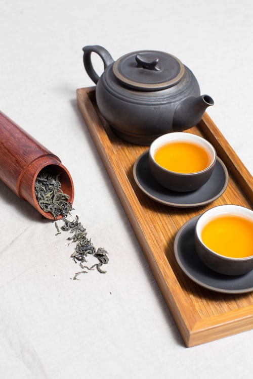

- 홍차
- 녹차
- 백차
홍차
- 기문홍차
- 황산모봉
황산모봉
중국의 고급 녹차 중 하나이다. 안후이성 황산풍경구와 그 일대에서 생산된다. 황산지역은 까다로운 차나무의 일조량, 토질, 습도 등에 최적의 조건을 갖추어 좋은 차를 생산할 수 있다고. 오전에 깔끔한 차를 마시고 싶어 약 3g, 500-600ml 의 물, 약 70도씨에서 3분 간 우려냈다. 황산모봉은 약간 느슨하게 말린 차라 중투법으로 우리면 좋다고 하여 티팟에 1/4 정도 물을 부은 다음 찻잎을 넣고 나머지 물을 천천히 부어 우려냈다. 물을 붓는 동안에도 고소하고 향기로운 향을 맡을 수 있다. 찻물은 아주 여리고 맑은 녹색을 띈다. 신선하고도 고소한 향을 맡으면서 차를 마시면 보기보다 훨씬 확실한 녹차의 맛이 느껴진다. 삶은 밤의 옅은 고소하고 달콤함이 오래 지속된다. 녹차는 2,3번째 우려 마실 때 여러가지 영양소를 포함한 맛이 제대로 우러나는데 아쉽게도 한 번 밖에 마시질 못했다. 왜 사람들이 모여서 차를 마시는지 점점 알 것 같다. 여러 번 마시면서 달라지는 차를 즐기고 다양한 차를 번갈아 마시려면 혼자서는 무리가 있다. 황산모봉은 식은 후에도 맛이 거의 변하지 않는다. 더울 때 냉침하여 마시는 것도 좋겠다. 홍차나 우롱차는 날씨, 기분, 상황에 따라 다양한 나라의 차를 골라서 마셔도 문제 없는데 중국 녹차는 참으로 귀한 맛이라 대체가 어려운 느낌.

중국의 푸젠성 우이산에서 생산되는 무이암차 중에서도 제일 유명하고 고급차로 알려져 있다. 대홍포는 우이산 절벽 사이에서 자라는 6개의 차나무에서 생산된다. 어느 옛날 황제의 병을 이 차로 치유하자 황제가 직접 자신의 홍포(황제가 입는 붉은 도포)를 차나무에 덮어 주었다는 전설 때문에 대홍포라 불리게 되었다고 한다. 약간 붉은 갈색으로 맑은 수색을 보여준다. (사진에선 다소 탁하게 보임) 구수하고 향긋한 꽃향을 맡을 수 있고 맛은 부드러우면서도 구수함이 있다. 암차의 특징인 암운이 길게 느껴진다. 주로 테이스팅을 하다 보니 암운을 자세히 느끼지 못했는데 책을 참고하니 작은 잔에 나누어 여러 번, 천천히 음미해야 진정한 암운을 느낄 수 있다고 한다. 아직까지는 감미로운 고소함이 제일 강하게 느껴진다. 문향배는 아니지만 두껍고 좁고 긴 차잔을 이용하니 향을 좀 더 오래 느낄 수 있었다. 테이스팅 시에도 끝까지 풍미를 놓치지 않는 것이 중요하다. 상당이 농후한 맛이라 쌀쌀한 계절이나 비가 많이 오는 날씨에 어울리는 차이다. 음식을 곁들이는 것 보다는 식사 후 오롯이 차만 즐기는 것이 어울릴 것 같다.